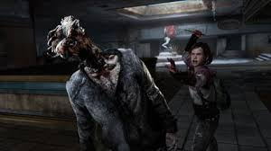

The Last of Us is a 2013 action-adventure game developed by Naughty Dog and published by Sony Computer Entertainment. Players control Joel, a smuggler tasked with escorting a teenage girl, Ellie, across a post-apocalyptic United States. The Last of Us is played from a third-person perspective. Players use firearms and improvised weapons, and can use stealth to defend against hostile humans and cannibalistic creatures infected by a mutated fungus in the genus Cordyceps. In the online multiplayer mode, up to eight players engage in cooperative and competitive gameplay.
Development of The Last of Us began in 2009, soon after the release of Naughty Dog's previous game, Uncharted 2: Among Thieves. For the first time in the company's history, Naughty Dog split into two teams; while one team developed Uncharted 3: Drake's Deception, the other half developed The Last of Us. The relationship between Joel and Ellie became the focus, with all other elements developed around it. Actors Troy Baker and Ashley Johnson portrayed Joel and Ellie, respectively, through voice and motion capture, and assisted creative director Neil Druckmann with the development of the characters and story. The original score was composed and performed by Gustavo Santaolalla.
Following its announcement in December 2011, The Last of Us was widely anticipated. It was released for the PlayStation 3 in June 2013; a remastered version was released for the PlayStation 4 in July 2014.[a] It received critical acclaim, with praise going to narrative, gameplay, visuals, sound design, characterization, and depiction of female characters. The Last of Us became one of the best-selling video games, selling over 1.3 million units in its first week and 17 million by April 2018. The game won year-end accolades, including multiple Game of the Year awards, from several gaming publications, critics, and game award ceremonies. It has been cited as one of the greatest video games ever made.
Naughty Dog released several downloadable content additions; The Last of Us: Left Behind adds a single-player campaign following Ellie and her best friend Riley. The Last of Us Part II, a sequel, was released in June 2020. A television adaptation is currently in production by HBO, written by Druckmann and Craig Mazin and starring Pedro Pascal as Joel and Bella Ramsey as Ellie.
